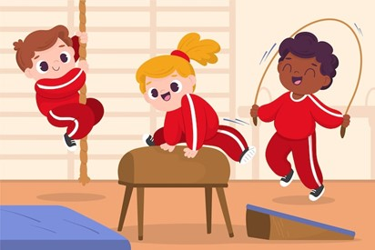
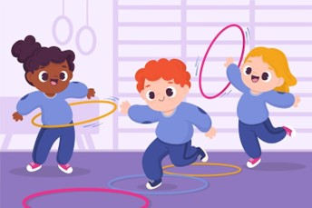
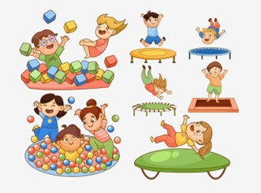

El Problema y los Objetivos

¿Qué está pasando?
Actualmente, muchos niños entre 6 y 12 años presentan:
- Bajo nivel de actividad física
- Dificultades en coordinación motriz
- Problemas en la interacción social
- Dependencia de dispositivos tecnológicos
Nuestros Objetivos
Desarrollar habilidades motrices, cognitivas y sociales mediante una propuesta pedagógica basada en el juego motor.
- Fortalecer habilidades motrices básicas
- Promover la cooperación y el trabajo en equipo
- Estimular la toma de decisiones
- Fomentar valores como respeto y empatía
Análisis Praxiológico
Clasificación de las situaciones motrices según Pierre Parlebas y Lagardera y Lavega.

Situaciones Psicomotrices
El individuo actúa de manera individual, sin interacción con otros.
Ejemplos: ejercicios de equilibrio, saltos, circuitos motores.
Situaciones Sociomotrices
Se caracterizan por la interacción entre dos o más participantes.
- Cooperación: Lograr un objetivo común.
- Oposición: Enfrentamiento entre participantes.
- Coop-Oposición: Dinámicas combinadas (ej. deportes colectivos).
Evaluación del Aprendizaje

Instrumentos
- Lista de chequeo
- Observación directa
- Registro anecdótico
Indicadores
- Coordinación motriz
- Participación
- Trabajo en equipo
- Toma de decisiones
Resultados Esperados
- Mejora en habilidades motrices
- Mayor interacción social
- Incremento en motivación
Banco de Juegos

Juegos: 6-8 Años
Pierre Parlebas
Objetivo: Fomentar la cooperación, la comunicación y la resolución de problemas en grupo.
Materiales: Aros, hojas o colchonetas (simulan "islas").
Desarrollo: Se distribuyen varias "islas" en el espacio. Todos los niños deben ubicarse en ellas sin tocar el suelo. Progresivamente se reducen las islas, obligando a cooperar.
Bernard Aucouturier
Objetivo: Desarrollar la regulación emocional, la seguridad afectiva y la confianza.
Materiales: Colchonetas, telas o mantas.
Desarrollo: Se crean espacios tipo "refugio" donde los niños pueden entrar cuando lo deseen. Luego regresan al juego general, respetando sus tiempos.
Juegos: 10-12 Años
Jean Piaget
Objetivo: Fortalecer el pensamiento lógico y la capacidad de ordenamiento.
Materiales: Tarjetas con números o imágenes en secuencia.
Desarrollo: Se presentan secuencias incompletas y los niños deben identificar qué elemento falta o cuál sigue.
El desafío en equipo (Vygotsky)
Objetivo: Promover la resolución de problemas en grupo.
Materiales: Retos (armar algo, transportar objetos, etc.).
Desarrollo: Equipos compiten resolviendo retos que requieren estrategia y colaboración. (Juego cooperativo dinámico).